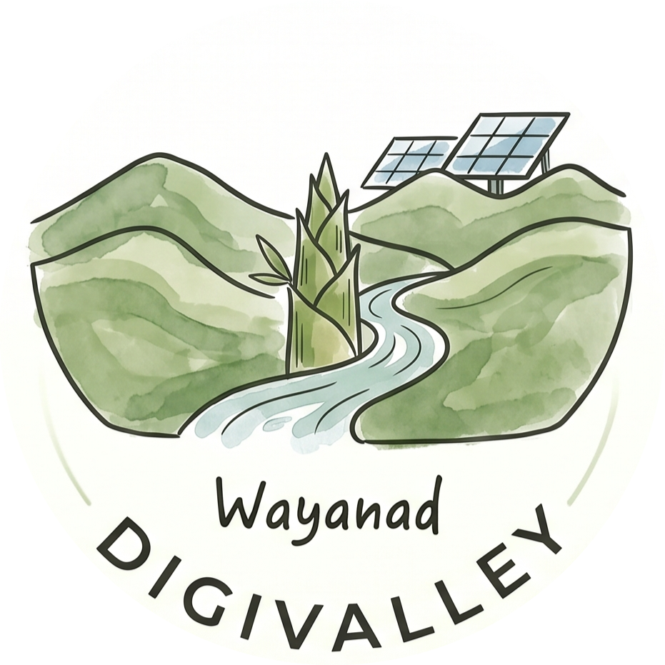
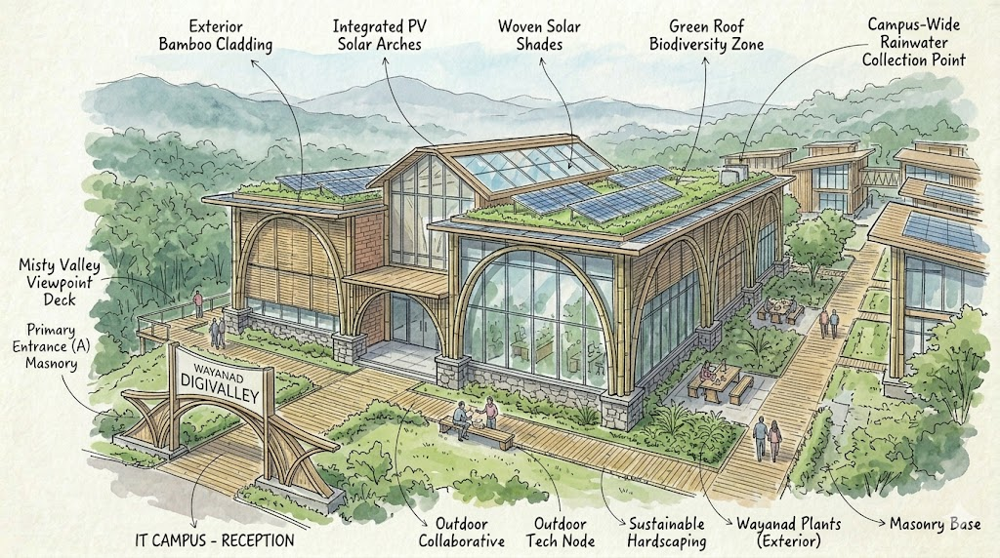
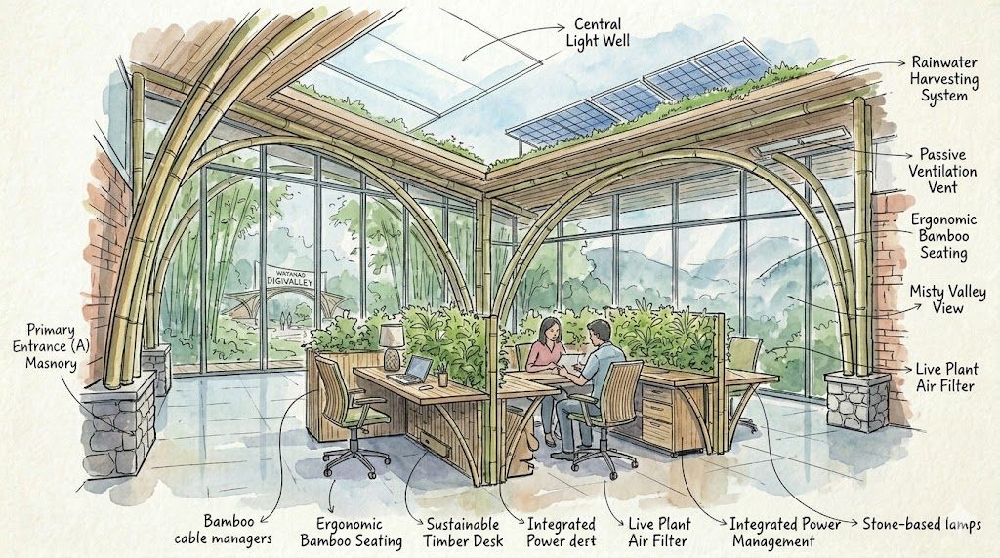

Anchor Stations
High‑density, corporate‑grade transit nodes in Kalpetta, Sultan Bathery & Mananthavady. Dual‑screen terminals, IoT testing beds, seminar halls.
100–150 seats
Wayanad · Western Ghats · 2030
A Blueprint for India's First Distributed, Carbon-Neutral Green Digital Sanctuary
Wayanad, cradled by the majestic Western Ghats, is uniquely poised to pioneer a distributed, high‑AQI green digital corridor — transforming remote villages into low‑density, high‑value tech sanctuaries.
Rather than competing with Bengaluru or Kochi, Digivalley becomes an elite “decompression & deep‑work zone” for high‑skill knowledge workers, global digital nomads, and enterprise R&D retreats — channelling corporate capital directly into rural agricultural micro‑economies while preserving a pristine micro‑climate.
Dual‑screen pods, Starlink & dark‑fiber, solar microgrids.
UNESCO‑aligned, zero‑waste hubs with a net‑zero footprint.
Micro‑revenues, homestay uplift, land‑lease prosperity.

Wayanad is a core component of the Nilgiri Biosphere Reserve, inscribed within the UNESCO Western Ghats World Heritage List. This status mandates stringency — Digivalley avoids large concrete footprints, opting for modular, elevated structures that never disrupt elephant corridors, endemic flora, or hydrological flows.
Three interlinked spatial tiers keep human density within ecologically safe thresholds.
High‑density, corporate‑grade transit nodes in Kalpetta, Sultan Bathery & Mananthavady. Dual‑screen terminals, IoT testing beds, seminar halls.
100–150 seatsPremium stilted, glass‑walled workspaces above the terrain at forest edges — a “cabin in the woods” aesthetic with wellness & meditation loops.
30–50 seatsSolar‑powered single‑user pods inside working coffee, tea, pepper & cardamom plantations. Work, then step out to harvest.
1–5 pods / estate
Decoupled microgrids — thin‑film monocrystalline solar paired with LiFePO4 storage. Zero diesel, zero acoustic noise.
Hybrid ring — underground dark fiber coupled with directional LEO satellite mesh (Starlink / OneWeb).
Dual‑screen, USB‑C single‑cable docks, universal Bluetooth testing arrays on low‑voltage DC.
Passive venting, radiant floor cooling, shaded eave geometry — no power‑hungry HVAC compressors.
A Public‑Private‑Community Partnership that reverses the inequities of conventional IT parks.
Farmers retain full title. The state leases micro‑parcels (150 sq ft) for Tier‑3 pods — farmers earn fixed yields plus a share of pod bookings.
Visiting professionals buy GI‑tagged Wayanad Robusta, organic pepper & forest honey direct from source — no middle‑men.
Homestays upskilled via grants to deliver premium hospitality & organic dining, circulating wealth into the village economy.
Site audits & approvals · blueprint validation · UNESCO buffer audits.
Pilot deployment of 5 hubs · initial power grids · anchor‑node testing.
Full district rollout · 50+ interlinked hubs · enterprise subscriptions.
An Agri‑AI Research Incubator for drone precision agriculture · a Global Retreat Corridor as Asia's premier carbon‑neutral deep‑work zone · subterranean green data vaults cooled naturally by groundwater flows.
Mentors, architects & champions guiding Digivalley from blueprint to a living valley.
Profiles are illustrative placeholders — ready to be replaced with your confirmed mentor roster.
Help shape the valley — partner, fund, host, or simply share an idea.
Co‑form the Wayanad Digi‑Valley Development Authority (WDDA) and unlock Phase 1 site allocations.
Reserve deep‑work retreats & R&D residencies — anchor subscriptions that fund the grid.
Lease micro‑parcels for pods and upskill hospitality to host the world's remote workers.
Designers, ecologists, technologists & locals — every suggestion shapes the blueprint.